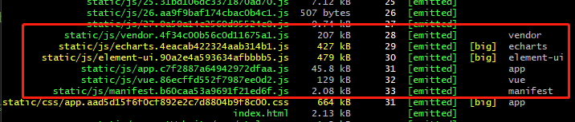
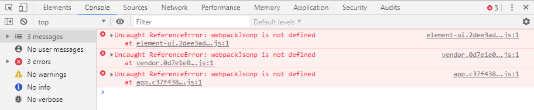
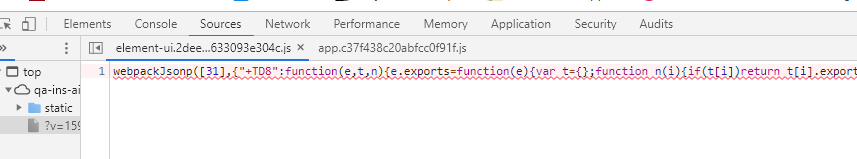
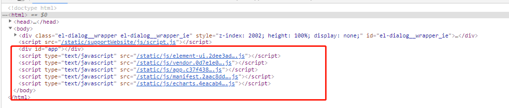
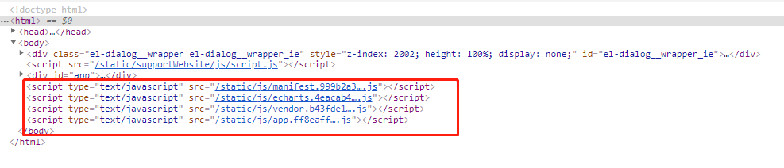
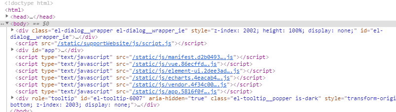
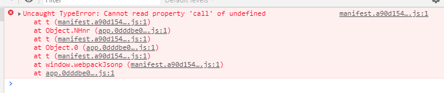

CommonsChunkPlugin代码拆分挖坑之路
目的
vue单文件打包，vendor体积过大，影响页面性能。将vue相关的（vue、vuex、vue-router），element-ui、echarts（echarts、zrender），以单独js文件抽离出来，从而减少vendor体积。同时，抽离不太可能更改的模块，对于项目的版本迭代也有一定的好处（避免不必要的文件hash变化，导致重新请求数据）。
开始挖坑
vue脚手架默认commonsChunkPlugin配置：
1 | // ./build/webpack.prod.conf.js |
这里的默认配置是从单一入口：app（entry chunk），将所有的公共插件抽离到vendor上，与webpack相关的运行环境模块抽离到manifest上。
初步的改造是：
1 | // 从vendor中抽离需要的模块数据 |
加上了上面的代码后，打包确实把element-ui、echarts、vue给抽离出来了:

以为有所成就了，立即发布到测试环境，万万没想到呀，出错了！


由webpackJsonp is not defined可想而知，是webpack打包后的运行环境出现了问题，官网介绍
根据CommonsChunkPlugin的配置可知，webpack运行相关的代码都拆分到了manifest中，可以猜测：
- manifest打包出错了
- not defined 在平常开发工作中十分常见，运行时webpackJsonp未定义
猜想1中，由于只是单一从vendor里拆出正则对应的chunk，几乎不影响webpack运行环境的抽离，很明显出错的概率很小。
大概率是猜想2的问题，查看了一下打包后的index.html文件

对比一下，我们其他环境（正常环境）的index.html

很明显，对于manifest.js的script调用顺序发生了改变，从而导致了webpackJsonp为not defined，所以我们需要改变chunks写入index.html的顺序
chunks的写入就是HtmlWebpackPlugin的工作了
vue脚手架出来，默认配置：1
2
3
4
5
6// webpack.prod.conf.js
new HtmlWebpackPlugin({
...
// necessary to consistently work with multiple chunks via CommonsChunkPlugin
chunksSortMode: 'dependency'
}),
chunksSortMode：允许在插入html之前控制chunks的排序
1 | Allows to control how chunks should be sorted before they are included to the HTML. Allowed values are 'dependency' | 'none' | 'auto' | 'manual' | {Function} |
‘dependency’：按照不同文件的依赖关系来排序，貌似在4.0版本以上看不到这个了
‘auto’：默认值
‘none’
‘manual’：自定义排序
既然一开始 chunksSortMode: ‘dependency’报错，说明上述拆分导致了文件间的依赖关系发生了错乱，这点没搞太懂，望各位大佬赐教一下…
搞不懂依赖关系为啥错乱，那么就手动添加chunks的写入顺序：
顺序要注意，app.js依赖于其他插件、库文件，所以必须在最后才加载，否则会产生大量的not defined错误
1 | // webpack.prod.conf.js |
打包后的文件妥妥的按照既定的顺序：

然后放到测试环境，就可以正常运行了….
疑惑点
有点怪异的是：前一天按照上文配置了，放到测试环境时，却出现了如下的错误（这里的图是个类似的错误内容截图，都是manifest.js里出现的’call’ of underfined）

所以以为manifest提取的chunks不完整导致的，加了下方的代码
1 | new webpack.optimize.CommonsChunkPlugin({ |
神奇的没问题了QAQ
然后第二天把这代码去掉重新打包，却没有了上面的问题，各位大佬有啥好的见解呢？
简单对比一下splitChunks
vue-cli3对splitChunks的默认配置：
1 | // code splitting |
而我们在vue.config.js上实现对element-ui和vue的拆分十分的简单，主要的就是对priority优先级的处理
1 | module.exports = { |
相比于CommonsChunkPlugin可谓十分的简单。
以上只是一点小小的见解，如有错误，不吝赐教！！！！！